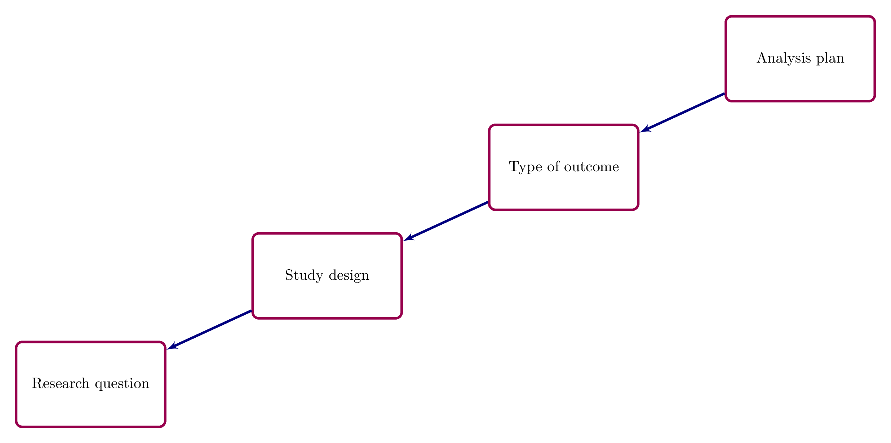
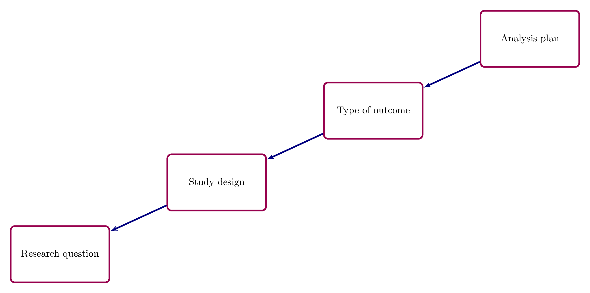
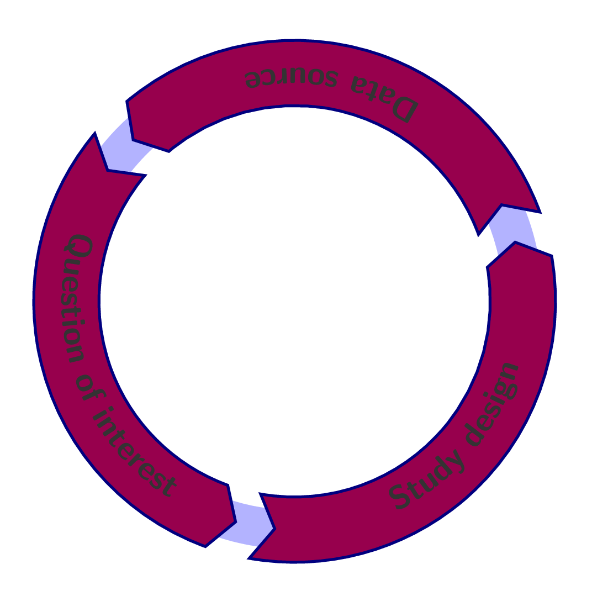
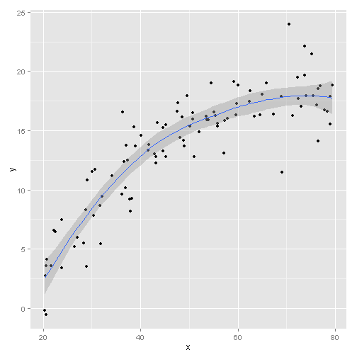

Steve Lane
Senior Biostatistics Officer



As John McEnroe said: You can't be serious?
Table 1. Characteristics of the patients at baseline.
| Variable | Control Group | Intervention Group |
|---|---|---|
| Males, n (%) | 45 (62%) | 48 (60%) |
| Age, year (IQR) | 63 (42, 80) | 62 (40, 78) |
| Current smoking, n (%) | 20 (27%) | 23 (29%) |